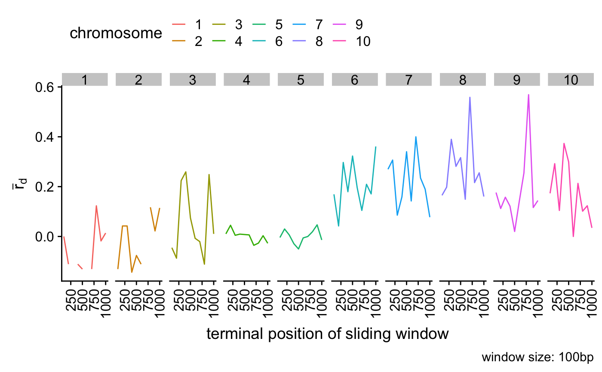

Genlight objects can contain millions of loci. Since it does not make much sense to calculate the index of association over that many loci, this function will scan windows across the loci positions and calculate the index of association.
win.ia(x, window = 100L, min.snps = 3L, threads = 1L, quiet = FALSE, chromosome_buffer = TRUE)
| x | a |
|---|---|
| window | an integer specifying the size of the window. |
| min.snps | an integer specifying the minimum number of snps allowed per window. If a window does not meet this criteria, the value will return as NA. |
| threads | The maximum number of parallel threads to be used within this function. A value of 0 (default) will attempt to use as many threads as there are available cores/CPUs. In most cases this is ideal. A value of 1 will force the function to run serially, which may increase stability on some systems. Other values may be specified, but should be used with caution. |
| quiet | if |
| chromosome_buffer | if |
Index of association representing the samples in this genlight object.
this will calculate the standardized index of association from Agapow
2001. See ia for details.
genlight,
snpclone,
samp.ia,
ia,
bitwise.dist
# with structured snps assuming 1e4 positions set.seed(999) x <- glSim(n.ind = 10, n.snp.nonstruc = 5e2, n.snp.struc = 5e2, ploidy = 2) position(x) <- sort(sample(1e4, 1e3)) res <- win.ia(x, window = 300L) # Calculate for windows of size 300#> | | | 0% | |== | 3% | |==== | 6% | |====== | 9% | |======== | 12% | |========== | 15% | |============ | 18% | |============== | 21% | |================ | 24% | |=================== | 26% | |===================== | 29% | |======================= | 32% | |========================= | 35% | |=========================== | 38% | |============================= | 41% | |=============================== | 44% | |================================= | 47% | |=================================== | 50% | |===================================== | 53% | |======================================= | 56% | |========================================= | 59% | |=========================================== | 62% | |============================================= | 65% | |=============================================== | 68% | |================================================= | 71% | |=================================================== | 74% | |====================================================== | 76% | |======================================================== | 79% | |========================================================== | 82% | |============================================================ | 85% | |============================================================== | 88% | |================================================================ | 91% | |================================================================== | 94% | |==================================================================== | 97% | |======================================================================| 100%plot(res, type = "l")not_run({ # unstructured snps set.seed(999) x <- glSim(n.ind = 10, n.snp.nonstruc = 1e3, ploidy = 2) position(x) <- sort(sample(1e4, 1e3)) res <- win.ia(x, window = 300L) # Calculate for windows of size 300 plot(res, type = "l") # Accounting for chromosome coordinates set.seed(999) x <- glSim(n.ind = 10, n.snp.nonstruc = 5e2, n.snp.struc = 5e2, ploidy = 2) position(x) <- as.vector(vapply(1:10, function(x) sort(sample(1e3, 100)), integer(100))) chromosome(x) <- rep(1:10, each = 100) res <- win.ia(x, window = 100L) plot(res, type = "l") # Converting chromosomal coordinates to tidy data library("dplyr") res_tidy <- res %>% data_frame(rd = ., chromosome = names(.)) %>% # create two column data frame filter(chromosome != "") %>% # filter out null chromosomes group_by(chromosome) %>% # group data by chromosome mutate(window = row_number()) %>% # windows by chromosome ungroup(chromosome) %>% # ungroup and reorder mutate(chromosome = factor(chromosome, unique(chromosome))) res_tidy # Plotting with ggplot2 library("ggplot2") ggplot(res_tidy, aes(x = window, y = rd, color = chromosome)) + geom_line() + facet_wrap(~chromosome, nrow = 1) + ylab(expression(bar(r)[d])) + xlab("window (100bp)") + theme(legend.position = "bottom") })